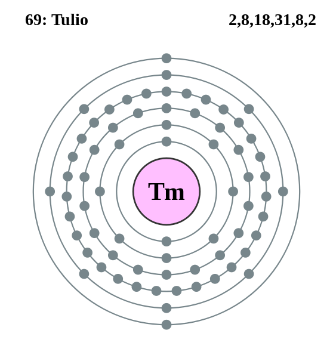

|
|
||
|
TULIO El tulio se descubrió en 1879, se produce en una serie de minerales, como la monacita. Es el menos abundante de los elementos de tierras raras y es tan poco frecuente como la plata, el oro o el cadmio. El tulio es de color gris plateado, blando, maleable, dúctil y se puede cortar con un cuchillo. Se conocen 25 isótopos; el tulio natural es estable. El tulio, relativamente caro, tiene aplicaciones limitadas. Puede utilizarse como fuente de emisión de radiaciones para equipos portátiles de rayos X o como fuente de energía. El tulio natural puede ser útil en materiales magnéticos cerámicos o equipos de microondas. |
 |
DATOS Número Atómico: 69 Peso Atómico: 168.9 Electronegatividad: 1.25 Configuración Electrónica: [Xe]4f136s2 Estados de Oxidación: +3,2 No. de Electrones de Valencia: 2 |